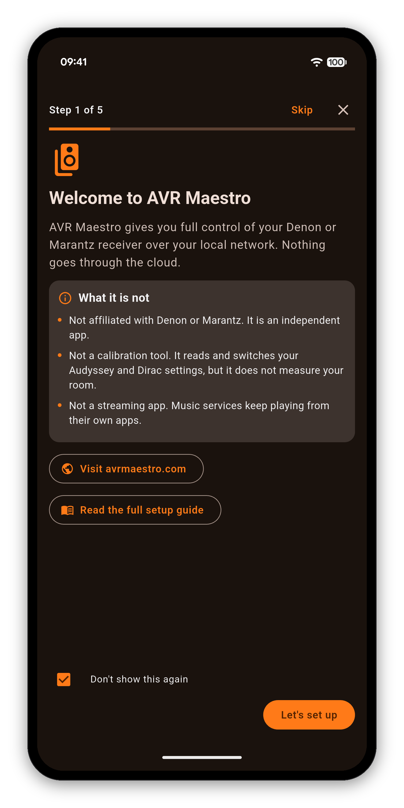
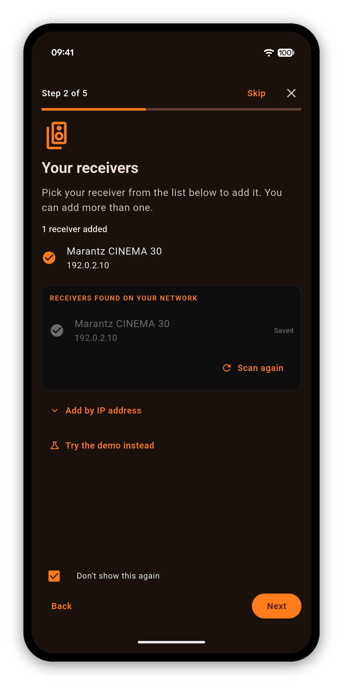
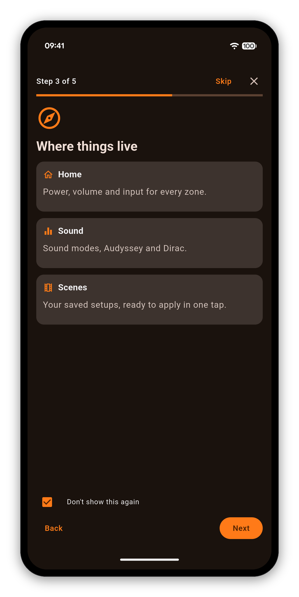
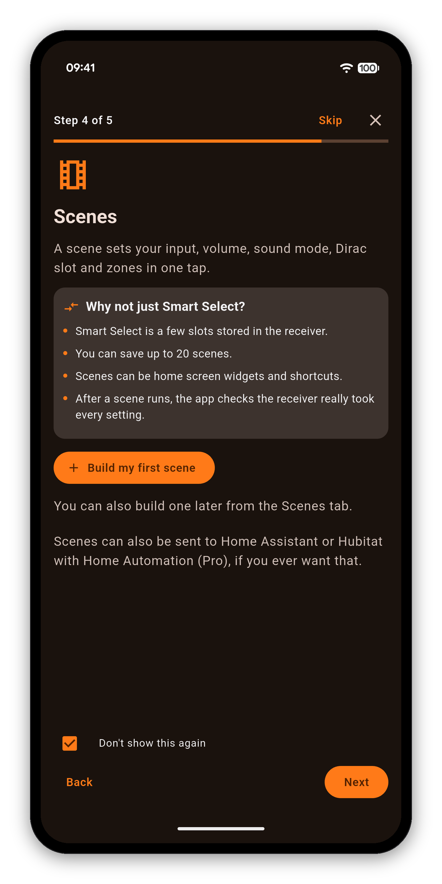
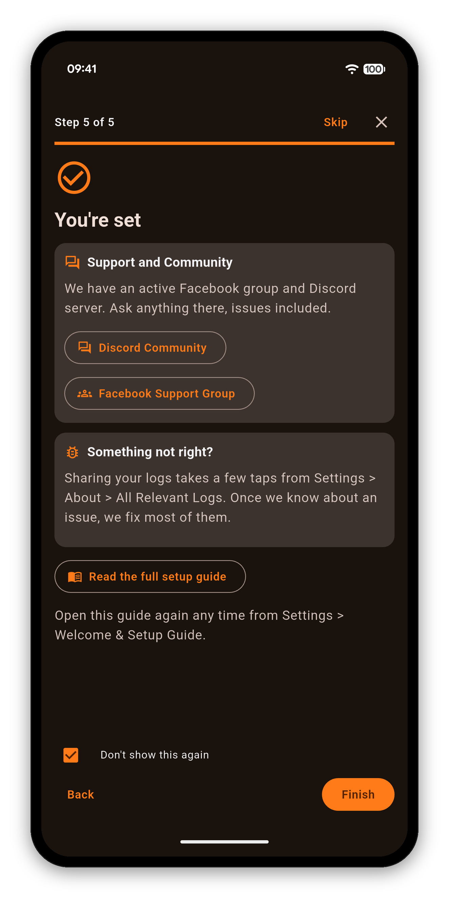

AVR Maestro talks to your receiver over your local network using its native protocol - no cloud account, no extra hardware. A short welcome guide gets you connected and building your first Scene in a couple of minutes.
The first time you open AVR Maestro, a short guide walks you from zero to your first Scene. A bar at the top shows how far along you are, Back takes you to any earlier step, and Skip is always there if you would rather explore on your own.







Home Screen · Scenes · Custom Icons · Sound · Graphic EQ · Speakers · Why a control is locked · The Assistant · Home Automation · Home Assistant dashboard · Zones · Remote · Radio (FM/AM) · On-Screen Display · Settings · Languages · Volume Controls · Backup & Restore · Now Playing & HEOS
One-time purchase, no ads, no subscriptions - and your receiver's configuration never leaves your network.